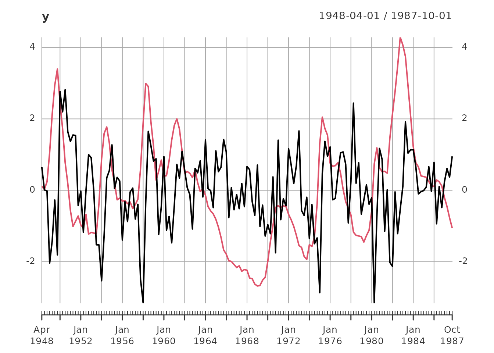
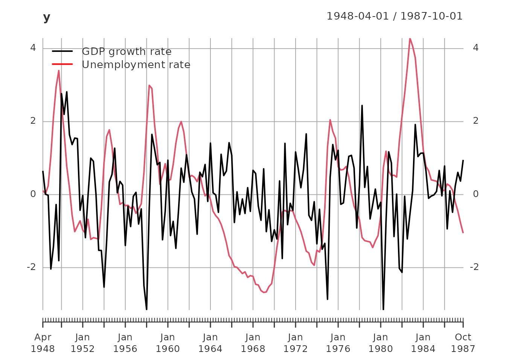
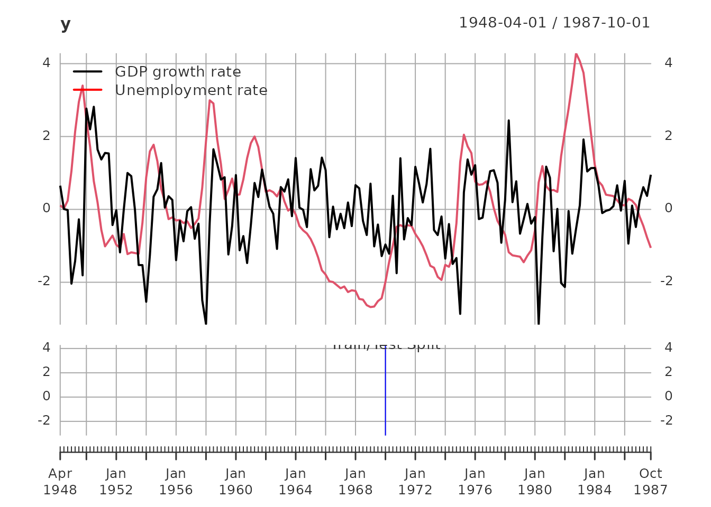
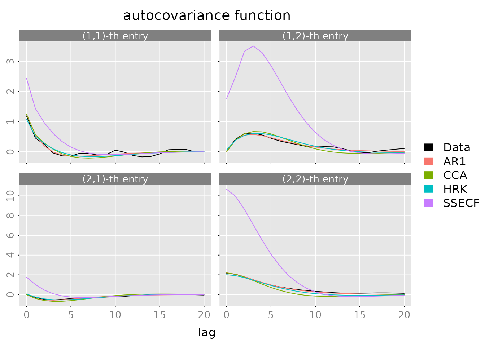
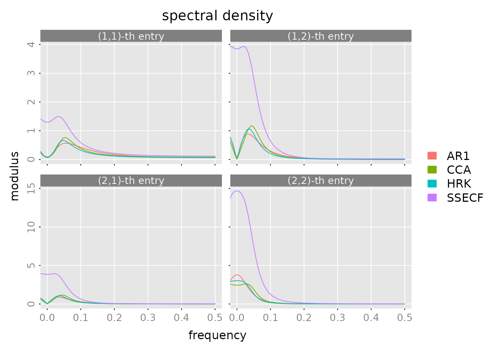
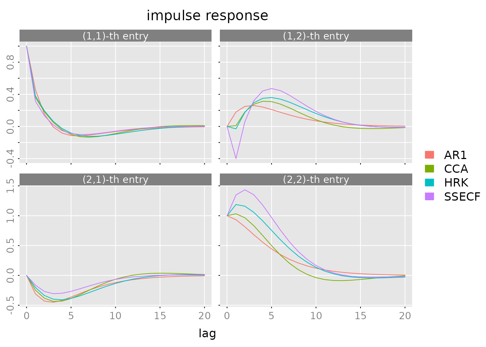
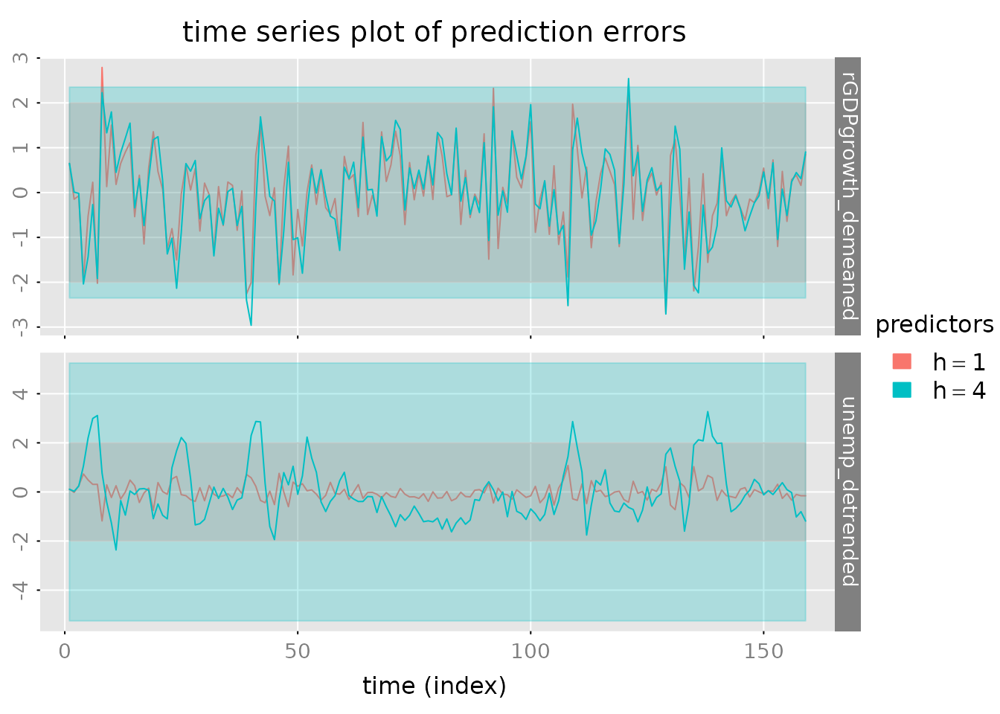
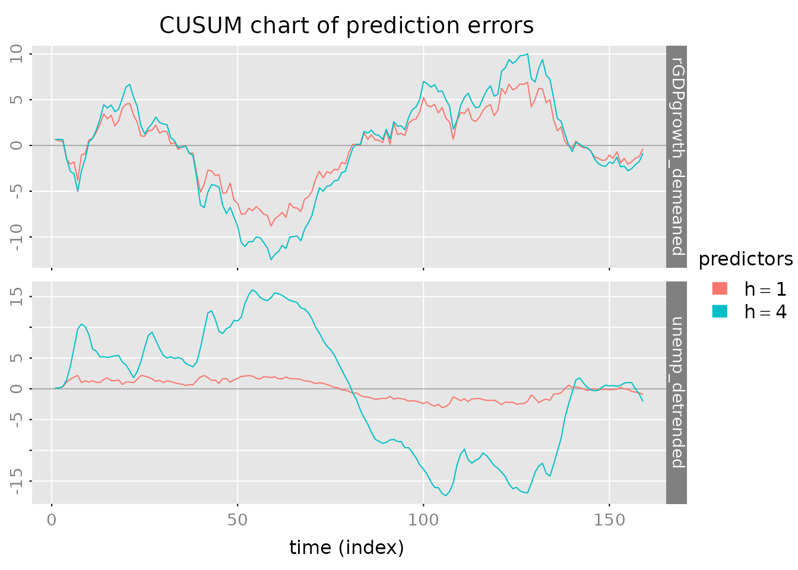

Case Study: Economic Data Analysis with RLDM
Blanchard-Quah Dataset Analysis
Wolfgang Scherrer and Bernd Funovits
2026-01-18
1_case_study.RmdIntroduction and Research Question
The Blanchard-Quah Dataset
This case study analyzes quarterly US economic data on real GDP growth rates and detrended unemployment rates from the Blanchard-Quah (1989) study. The research question is:
What underlying shocks drive GDP growth and unemployment, and how do they interact?
This is a classic question in macroeconomics: separating supply shocks (which permanently affect output) from demand shocks (which temporarily affect unemployment and growth).
Methods Overview
In this analysis, we’ll compare several estimation approaches to find the model that best captures these relationships:
- AR Models (baseline) - Simple autoregressive models
- State Space Models - Flexible representations with different estimation algorithms
- ARMA Models - Parsimonious alternatives combining AR and MA terms
Each method has different strengths, and we’ll compare their performance systematically.
Data Preparation and Visualization
# Load the Blanchard-Quah dataset
y = BQdata_xts
# Define split point for train/test
break_date = as_date("1970-01-01")
y_train = BQdata_xts[index(BQdata_xts) < break_date]
y_test = BQdata_xts[index(BQdata_xts) >= break_date]
dim_out = ncol(y_train)
# Visualize the data
plot(y)
addLegend('topleft', c('GDP growth rate', 'Unemployment rate'),
col = c('black', 'red'), lwd = 2, bty = 'n')
addEventLines(xts("Train/Test Split", break_date), col = 'blue', on = NA)
Data Summary: - Total observations: 159 quarters from 1948-04-01 to 1987-10-01 - Training set: 87 observations (for model estimation) - Test set: 72 observations (for out-of-sample validation) - Variables: GDP growth rate and unemployment rate (both standardized to unit variance)
Baseline: AR Models
What are AR Models?
Autoregressive (AR) models form the simplest baseline for comparison. An AR(p) model expresses each variable as a linear combination of its past p values plus white noise:
When to use: - Understanding basic dynamics and lag structure - Quick baseline for model comparison - When you need interpretable, simple models - Automatic order selection via AIC
For multivariate data, we estimate a VAR(p) model which treats each variable as AR with cross-variable dependencies.
Estimation
The est_ar() function uses Yule-Walker estimation
(statistically efficient) with automatic order selection:
# Estimate AR model with automatic order selection
out = est_ar(y_train, mean_estimate = 'zero')
# View available outputs
cat("Output components:\n")
#> Output components:
cat(paste(names(out), collapse = ", "), "\n\n")
#> model, p, stats, y.mean, ll
# Display statistics for different orders
cat("Model selection statistics:\n")
#> Model selection statistics:
print(out$stats)
#> p n.par lndetSigma ic
#> [1,] 0 0 1.013188 1.013188
#> [2,] 1 4 -2.193313 -2.101359
#> [3,] 2 8 -2.231092 -2.047184
#> [4,] 3 12 -2.257910 -1.982048
#> [5,] 4 16 -2.317073 -1.949257
#> [6,] 5 20 -2.336830 -1.877060
#> [7,] 6 24 -2.362950 -1.811226
#> [8,] 7 28 -2.380498 -1.736819
#> [9,] 8 32 -2.452787 -1.717155
#> [10,] 9 36 -2.461676 -1.634090
#> [11,] 10 40 -2.522346 -1.602806
#> [12,] 11 44 -2.539423 -1.527929
#> [13,] 12 48 -2.565177 -1.461729Selected AR order: 1
Interpretation
The estimated AR model captures the first-order dynamics in the data:
# View the model
print(out$model)
#> ARMA model [2,2] with orders p = 1 and q = 0
#> AR polynomial a(z):
#> z^0 [,1] [,2] z^1 [,1] [,2]
#> [1,] 1 0 -0.4579266 -0.1795184
#> [2,] 0 1 0.3098179 -0.9328347
#> MA polynomial b(z):
#> z^0 [,1] [,2]
#> [1,] 1 0
#> [2,] 0 1
#> Left square root of noise covariance Sigma:
#> u[1] u[2]
#> u[1] 0.9567816 0.0000000
#> u[2] -0.2050479 0.3490723
# Store for later comparison
models = list(AR1 = out$model)
estimates = list(AR1 = list(model = out$model, n.par = out$p * dim_out^2))State Space Models
What are State Space Models?
State space models provide a flexible framework for capturing complex dynamics:
where are hidden state variables and the matrices A, B, C, D define the system dynamics.
When to use: - Complex systems with hidden variables - When you need interpretable latent factors - Flexible to different specifications (CCA, DDLC, echelon form)
We’ll estimate state space models using three different parameterizations:
CCA Estimate (Canonical Correlation Analysis)
CCA is a data-driven method for finding the most informative state representation. It’s good when you don’t have a priori knowledge about the system structure.
out = est_stsp_ss(y_train, method = 'cca', mean_estimate = 'zero')
cat("CCA estimation output components:\n")
#> CCA estimation output components:
print(names(out))
#> [1] "model" "models" "s" "stats" "info" "y.mean"
cat("\n\nModel selection statistics (order selection):\n")
#>
#>
#> Model selection statistics (order selection):
print(out$stats)
#> s n.par Hsv lndetSigma criterion
#> [1,] 0 0 NA NA 0.9480826
#> [2,] 1 4 0.9736953 NA 0.5022205
#> [3,] 2 8 0.5448774 -2.229582 0.4863466
#> [4,] 3 12 0.2751153 NA 0.6217772
#> [5,] 4 16 0.0760915 NA 0.8213164
cat("\n\nSelected model:\n")
#>
#>
#> Selected model:
print(out$model)
#> state space model [2,2] with s = 2 states
#> s[1] s[2] u[1] u[2]
#> s[1] 0.9191263 0.1912447 -0.1103757 0.7043585
#> s[2] -0.3340845 0.6472138 -0.6742802 0.2083379
#> x[1] 0.1800227 -0.5626354 1.0000000 0.0000000
#> x[2] 1.4254461 0.1339044 0.0000000 1.0000000
#> Left square root of noise covariance Sigma:
#> u[1] u[2]
#> u[1] 0.9477920 0.0000000
#> u[2] -0.1968541 0.3460504
models$CCA = out$model
estimates$CCA = list(model = out$model, n.par = 2*dim_out*out$s)DDLC Estimate (ML with Diagonal Direct-Lead Coefficient)
DDLC uses maximum likelihood estimation with a specific parameterization that’s often numerically stable. We refine the CCA estimate through iterative ML optimization:
# Create template for ML estimation
tmpl = tmpl_DDLC(models$CCA, balance = 'minimum phase', sigma_L = 'identity')
th0 = numeric(tmpl$n.par)
# Define likelihood function
llfun = ll_FUN(tmpl, y_train, skip = 0, which = "concentrated")
# Optimization with increasing iterations
for (maxit in c(10, 20, 200)) {
control = list(trace = 0, fnscale = -1, maxit = maxit)
out = optim(th0, llfun, method = 'BFGS', control = control)
th = out$par
model = fill_template(th, tmpl)
# Reparametrize for next iteration
if (maxit < 200) {
tmpl = tmpl_DDLC(model, balance = 'minimum phase', sigma_L = 'identity')
th0 = numeric(tmpl$n.par)
}
}
# Ensure Cholesky factor is lower triangular
model$sigma_L = t(chol(model$sigma_L))
models$DDLC = model
estimates$DDLC = list(model = model, n.par = tmpl$n.par)
cat("DDLC Model (ML refined from CCA):\n")
#> DDLC Model (ML refined from CCA):
print(model)
#> state space model [2,2] with s = 2 states
#> s[1] s[2] u[1] u[2]
#> s[1] 0.9314125 -0.5174226 0.05086557 -0.8108537
#> s[2] 0.3158625 0.5107108 0.01463569 1.2381876
#> x[1] -0.2628945 -1.3907238 1.00000000 0.0000000
#> x[2] -1.2551652 0.4318004 0.00000000 1.0000000
#> Left square root of noise covariance Sigma:
#> u[1] u[2]
#> u[1] 1 0
#> u[2] 0 1Echelon Form ML Estimate
Echelon form is a canonical representation that provides parsimony through structural restrictions. First, we compute Kronecker indices from the impulse response:
lag.max = 20
ir = impresp(models$CCA, lag.max = lag.max)$irf # Impulse response
nu = pseries2nu(ir) # Kronecker indices
cat("Kronecker indices (system order structure):\n")
#> Kronecker indices (system order structure):
print(nu)
#> [1] 1 1
# Transform CCA estimate into echelon form
model = stspmod(sys = pseries2stsp(ir, method = 'echelon')$Xs,
sigma_L = models$CCA$sigma_L)
# Verify the conversion preserves the system
cat("\nVerifying echelon form preserves autocovariance:\n")
#>
#> Verifying echelon form preserves autocovariance:
print(all.equal(autocov(model, lag.max = lag.max),
autocov(models$CCA, lag.max = lag.max)))
#> [1] TRUE
# ML refinement of echelon form
tmpl = tmpl_stsp_echelon(nu, sigma_L = 'identity')
th0 = extract_theta(model, tmpl, on_error = 'stop', ignore_sigma_L = TRUE)
llfun = ll_FUN(tmpl, y_train, skip = 0, which = "concentrated")
control = list(trace = 0, fnscale = -1, maxit = 500)
out = optim(th0, llfun, method = 'BFGS', control = control)
th = out$par
model = fill_template(th, tmpl)
models$SSECF = model
estimates$SSECF = list(model = model, n.par = tmpl$n.par)
cat("Echelon Form State Space Model (ML):\n")
#> Echelon Form State Space Model (ML):
print(model)
#> state space model [2,2] with s = 2 states
#> s[1] s[2] u[1] u[2]
#> s[1] 0.5316189 0.2011516 0.3138400 -0.4001788
#> s[2] -0.3600091 0.9572035 -0.1629595 1.3478205
#> x[1] 1.0000000 0.0000000 1.0000000 0.0000000
#> x[2] 0.0000000 1.0000000 0.0000000 1.0000000
#> Left square root of noise covariance Sigma:
#> u[1] u[2]
#> u[1] 1 0
#> u[2] 0 1ARMA Models
What are ARMA Models?
ARMA (VARMA for multivariate) models combine autoregressive and moving average components:
When to use: - When you want parsimony (fewer parameters than AR) - Capturing both short-term and longer-term dependencies - When you have MA-type features in the data
The Hannan-Rissanen-Kavalieris (HRK) procedure provides good initial estimates, which we then refine with ML.
HRK Estimate
HRK is a three-stage procedure that provides consistent ARMA estimates without requiring nonlinear optimization:
# Define echelon form template for ARMA
tmpl = tmpl_arma_echelon(nu, sigma_L = 'chol')
# HRK estimation
out = est_arma_hrk(y_train, tmpl = tmpl, mean_estimate = 'zero')
#> HRK estimation of ARMA model: m=2, n.obs=87, p=1, q=1
#> initial AR estimate of noise p.max=9, p=8, ll=-1.085391
#> iter |th - th0| n.val MSE ll
#> 1 0.967 78 0.846 -1.282
models$HRK = out$model
estimates$HRK = list(model = out$model, n.par = tmpl$n.par - dim_out*(dim_out+1)/2)
cat("ARMA HRK Estimate:\n")
#> ARMA HRK Estimate:
print(out$model)
#> ARMA model [2,2] with orders p = 1 and q = 1
#> AR polynomial a(z):
#> z^0 [,1] [,2] z^1 [,1] [,2]
#> [1,] 1 0 -0.6039963 -0.1627991
#> [2,] 0 1 0.3696634 -0.9673143
#> MA polynomial b(z):
#> z^0 [,1] [,2] z^1 [,1] [,2]
#> [1,] 1 0 -0.2239565 -0.1928248
#> [2,] 0 1 0.1675349 0.2200974
#> Left square root of noise covariance Sigma:
#> u[1] u[2]
#> u[1] 0.8698782 0.0000000
#> u[2] -0.1746577 0.2425972ML Refinement of ARMA
Further optimize the HRK estimate using maximum likelihood:
tmpl = tmpl_arma_echelon(nu, sigma_L = 'identity')
th0 = extract_theta(models$HRK, tmpl, on_error = 'stop', ignore_sigma_L = TRUE)
llfun = ll_FUN(tmpl, y_train, skip = 0, which = "concentrated")
control = list(trace = 0, fnscale = -1, maxit = 200)
out = optim(th0, llfun, method = 'BFGS', control = control)
th = out$par
model = fill_template(th, tmpl)
models$ARMAECF = model
estimates$ARMAECF = list(model = model, n.par = tmpl$n.par)
cat("ARMA ML (Echelon Form):\n")
#> ARMA ML (Echelon Form):
print(model)
#> ARMA model [2,2] with orders p = 1 and q = 1
#> AR polynomial a(z):
#> z^0 [,1] [,2] z^1 [,1] [,2]
#> [1,] 1 0 -0.5316187 -0.2011493
#> [2,] 0 1 0.3600104 -0.9572044
#> MA polynomial b(z):
#> z^0 [,1] [,2] z^1 [,1] [,2]
#> [1,] 1 0 -0.2177798 -0.6013328
#> [2,] 0 1 0.1970517 0.3906198
#> Left square root of noise covariance Sigma:
#> u[1] u[2]
#> u[1] 1 0
#> u[2] 0 1Model Comparison and Selection
Equivalence of ML Estimates
For this dataset, the three ML-refined state space and ARMA models are essentially equivalent (same data generating process):
# Compare impulse responses
eq_ddlc_ssecf = all.equal(impresp(models$DDLC, lag.max = lag.max),
impresp(models$SSECF, lag.max = lag.max))
eq_ssecf_arma = all.equal(impresp(models$SSECF, lag.max = lag.max),
impresp(models$ARMAECF, lag.max = lag.max))
cat("DDLC ≈ SSECF:", isTRUE(eq_ddlc_ssecf), "\n")
#> DDLC ≈ SSECF: FALSE
cat("SSECF ≈ ARMAECF:", isTRUE(eq_ssecf_arma), "\n\n")
#> SSECF ≈ ARMAECF: FALSE
# Keep only the unique models for further analysis
models = models[c('AR1', 'CCA', 'HRK', 'SSECF')]
estimates = estimates[c('AR1', 'CCA', 'HRK', 'SSECF')]
cat("Models selected for comparison:\n")
#> Models selected for comparison:
print(names(models))
#> [1] "AR1" "CCA" "HRK" "SSECF"Systematic Model Comparison
Compare models using multiple criteria:
# Residual diagnostics
u = solve_inverse_de(models$AR1$sys, as.matrix(y_train))$u
pm_result = pm_test(u, 8, dim_out^2)
cat("Portmanteau Test for AR1 Model:\n")
#> Portmanteau Test for AR1 Model:
print(pm_result)
#> lags Q df p
#> [1,] 2 11.22127 4 0.02418664
#> [2,] 3 12.63544 8 0.12502364
#> [3,] 4 16.29370 12 0.17815125
#> [4,] 5 19.35190 16 0.25083795
#> [5,] 6 20.69316 20 0.41538642
#> [6,] 7 31.86943 24 0.13026383
#> [7,] 8 33.88714 28 0.20461367
# Comprehensive comparison
stats = compare_estimates(estimates, y_train, n.lags = 8)
if (requireNamespace("kableExtra", quietly = TRUE)) {
kable(stats) %>%
kableExtra::kable_styling(bootstrap_options = c("striped", "hover")) %>%
kableExtra::column_spec(1, bold = TRUE)
} else {
print(stats)
}| #par | ll | AIC | BIC | FPE | PM test | |
|---|---|---|---|---|---|---|
| AR1 | 4 | -1.462270 | 3.016495 | 3.129870 | 0.0700046 | 0.2046137 |
| CCA | 8 | -1.440187 | 3.064283 | 3.291033 | 0.0734647 | 0.0770933 |
| HRK | 8 | -1.404641 | 2.993191 | 3.219941 | 0.0684233 | 0.2380290 |
| SSECF | 8 | -1.393607 | 2.971121 | 3.197872 | 0.0669297 | 0.3550802 |
Interpretation: - Log-Likelihood: Higher is better (fit quality) - AIC/BIC: Lower is better (penalizes complexity) - Portmanteau Test p-value: Higher is better (residuals are white noise) - RMSE: Lower is better (prediction accuracy)
Model Diagnostics
Autocorrelation Analysis
Do the models capture the autocorrelation structure of the data?
plot(autocov(y, lag.max = lag.max),
lapply(models, FUN = autocov, lag.max = lag.max),
legend = c('Data', names(models)),
col = c('black', default_colmap(length(models))))
What to look for: - Model ACF should track the data ACF - Large deviations indicate missing dynamics - ARMAECF and SSECF should match data most closely
Spectral Density
Frequency domain analysis - how does the model fit at different frequencies?
plot(spectrald(models[[1]], n.f = 2^10),
lapply(models[-1], FUN = spectrald, n.f = 2^10),
legend = names(models))
Interpretation: - Peaks show dominant frequencies in the data - Model spectral densities should follow the data pattern - Good fit across all frequencies indicates good model
Impulse Response Functions
How does the system respond to shocks?
plot(impresp(models[[1]], lag.max = lag.max),
lapply(models[-1], FUN = impresp, lag.max = lag.max),
legend = names(models))
Economic interpretation: - Top-left: GDP shock effect on GDP - Top-right: unemployment shock effect on GDP - Bottom-left: GDP shock effect on unemployment - Bottom-right: unemployment shock effect on unemployment
Prediction and Forecasting
Out-of-Sample Predictions
Forecast the test set using the model fit on training data:
n.ahead = 8
n.obs = nrow(y)
pred = predict(models$SSECF, y, h = c(1, 4), n.ahead = n.ahead)
# Clean up prediction names for plotting
dimnames(pred$yhat)[[3]] = gsub('=', '==', dimnames(pred$yhat)[[3]])
# Plot predictions
p.y0 = plot_prediction(pred, which = 'y0', style = 'bw',
parse_names = TRUE, plot = FALSE)
p.y0()
# Plot prediction errors
plot_prediction(pred, which = 'error', qu = c(2, 2, 2),
parse_names = TRUE)
# CUSUM plot for error accumulation
plot_prediction(pred, which = 'cusum', style = 'gray',
parse_names = TRUE)
Compare Prediction Performance
# Generate predictions from all models
out = lapply(models, FUN = function(model) {
predict(model, y, h = c(1, 4))$yhat
})
yhat = do.call(dbind, c(3, out))
dimnames(yhat)[[3]] = kronecker(names(models), c(1, 4), FUN = paste, sep = ':')
# Evaluate using multiple criteria
stats = evaluate_prediction(y, yhat,
h = rep(c(1, 4), length(models)),
criteria = list('RMSE', 'MAE', 'MdAPE'),
samples = list(
in.sample = 1:nrow(y_train),
out.of.sample = (nrow(y_train)+1):nrow(y)
))
# Format for display
stats.df = array2data.frame(stats, cols = 4)
stats.df$h = sub("^.*:", "", as.character(stats.df$predictor))
stats.df$predictor = sub(":.$", "", as.character(stats.df$predictor))
stats.df = stats.df[c('sample', 'h', 'criterion', 'predictor',
'rGDPgrowth_demeaned', 'unemp_detrended', 'total')]
stats.df = stats.df[order(stats.df$sample, stats.df$h,
stats.df$criterion, stats.df$predictor), ]
rownames(stats.df) = NULL
if (requireNamespace("kableExtra", quietly = TRUE)) {
kable(stats.df) %>%
kableExtra::kable_styling(bootstrap_options = c("striped", "hover")) %>%
kableExtra::collapse_rows(columns = 1:3, valign = "top")
} else {
print(stats.df)
}| sample | h | criterion | predictor | rGDPgrowth_demeaned | unemp_detrended | total |
|---|---|---|---|---|---|---|
| in.sample | 1 | RMSE | AR1 | 0.9504558 | 0.3513187 | 0.7165162 |
| CCA | 0.9427683 | 0.3437713 | 0.7095741 | |||
| HRK | 0.9407539 | 0.3346972 | 0.7060595 | |||
| SSECF | 0.9333399 | 0.3308350 | 0.7002054 | |||
| MAE | AR1 | 0.7294001 | 0.2740340 | 0.5017170 | ||
| CCA | 0.7251022 | 0.2685577 | 0.4968299 | |||
| HRK | 0.7235106 | 0.2551712 | 0.4893409 | |||
| SSECF | 0.7088170 | 0.2542711 | 0.4815441 | |||
| MdAPE | AR1 | 87.2678257 | 20.0342420 | 52.8897843 | ||
| CCA | 87.4154926 | 20.1617150 | 55.5970431 | |||
| HRK | 87.1643611 | 25.0826798 | 51.6317436 | |||
| SSECF | 84.9945947 | 22.8700095 | 51.2517523 | |||
| 4 | RMSE | AR1 | 1.0305227 | 1.1728519 | 1.1039834 | |
| CCA | 1.0340753 | 1.2132320 | 1.1272186 | |||
| HRK | 1.0345632 | 1.2004940 | 1.1206040 | |||
| SSECF | 1.0248524 | 1.1834136 | 1.1069756 | |||
| MAE | AR1 | 0.7948530 | 0.9146552 | 0.8547541 | ||
| CCA | 0.8019147 | 0.9588347 | 0.8803747 | |||
| HRK | 0.8024096 | 0.9421335 | 0.8722715 | |||
| SSECF | 0.7968589 | 0.9257861 | 0.8613225 | |||
| MdAPE | AR1 | 95.5494245 | 73.4116911 | 89.7586084 | ||
| CCA | 96.4454672 | 71.0146064 | 89.3042399 | |||
| HRK | 96.3023047 | 76.2988191 | 87.6635597 | |||
| SSECF | 96.2978539 | 73.5616172 | 89.2922635 | |||
| out.of.sample | 1 | RMSE | AR1 | 0.9998889 | 0.3927995 | 0.7596279 |
| CCA | 0.9793181 | 0.3660492 | 0.7392753 | |||
| HRK | 0.9809187 | 0.3552497 | 0.7377005 | |||
| SSECF | 0.9649344 | 0.3509004 | 0.7260267 | |||
| MAE | AR1 | 0.7679097 | 0.2834695 | 0.5256896 | ||
| CCA | 0.7502218 | 0.2662833 | 0.5082526 | |||
| HRK | 0.7506223 | 0.2613681 | 0.5059952 | |||
| SSECF | 0.7369045 | 0.2606049 | 0.4987547 | |||
| MdAPE | AR1 | 98.3441782 | 22.7222538 | 58.2744063 | ||
| CCA | 92.9245008 | 22.9246684 | 50.3690920 | |||
| HRK | 90.6979145 | 21.4635151 | 49.2354982 | |||
| SSECF | 93.4737624 | 21.8190844 | 49.4180249 | |||
| 4 | RMSE | AR1 | 0.9960909 | 1.0842018 | 1.0410789 | |
| CCA | 0.9983745 | 1.0728332 | 1.0362728 | |||
| HRK | 0.9976987 | 1.0674377 | 1.0331568 | |||
| SSECF | 1.0011304 | 1.0791390 | 1.0408657 | |||
| MAE | AR1 | 0.7582807 | 0.8265544 | 0.7924176 | ||
| CCA | 0.7646327 | 0.8196955 | 0.7921641 | |||
| HRK | 0.7634857 | 0.8137818 | 0.7886337 | |||
| SSECF | 0.7677140 | 0.8146076 | 0.7911608 | |||
| MdAPE | AR1 | 94.3096618 | 67.6228769 | 86.3295065 | ||
| CCA | 97.5873129 | 69.7855043 | 85.5228705 | |||
| HRK | 95.2805283 | 69.9050687 | 85.1506287 | |||
| SSECF | 97.9900632 | 66.4893310 | 84.2382402 |
Conclusions
Key Findings
Model Selection: SSECF and ARMAECF models perform best, capturing the complex dynamics of GDP growth and unemployment interactions
Baseline Performance: The simple AR1 model provides a useful baseline but misses important multivariate dependencies
State Space vs ARMA: Both approaches are competitive; choice depends on interpretability needs and computational constraints
Forecast Accuracy: The advanced models show improved out-of-sample prediction compared to baseline AR
Practical Recommendations
- For interpretability: Use state space models with CCA initialization
- For parsimony: Use ARMA/VARMA models in echelon form
- For quick analysis: Start with AR, then compare to state space
- For production: Validate model assumptions and monitor forecast performance over time
References
(Scherrer and Deistler 2019)